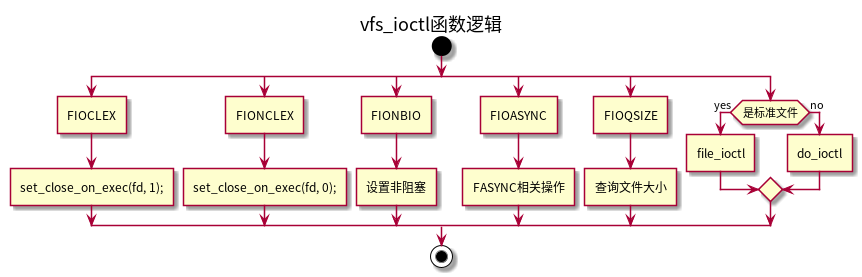
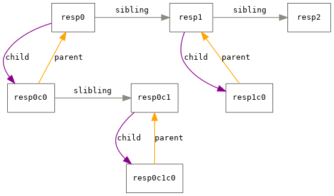

设备子系统
1. 概览
总线负责设备与CPU之间以及各个设备之间的通信。有很多方法可以实现总线， 大多数方法Linux都能够支持。一些代表性的总线: PCI、ISA、SBus、IEEE1394、USB、SCSI以及并口与串口等。
不同总线的连接方式：
1.1. 总线与外设的交互
- I/O端口： 内核发送数据给 I/O控制器。通过唯一的端口号标识目标设备，数据被传输到设备进行处理。处理器管理一个独立的虚拟地址空间，用于管理所有I/O地址。 注意：I/O地址空间通常不关联到普通的系统内存，但是端口也可以映射到内存中。
- I/O内存映射：现代处理器都提供了对I/O端口进行内存映射的选项，将特定外设的端口地址映射到普通内存中，可以像处理普通内存那样操作外设。图形卡通常会使用这类操作，PCI之类的系统总线通常也通过I/O地址映射进行寻址。内存映射主要通过 ioremap 和 iounmap 命令，分别用于映射I/O内存区和解除映射。
轮询和中断：轮询就是重复的访问设备数据是否可用。 中断：每个CPU都提供了中断线（interrupt line），可由各个系统设备共享（几个设备也可能共享一个中断）。每个中断通过一个唯一的号码标识，每个中断提供一个服务例程。
中断将暂停正常的系统工作。在外设的数据已经就绪时，外设会引发一个中断。使用这种方法，系统就不再需要频繁检查是否有新的数据可用。因为外设在有新数据的情况下可以自动通知系统。
2. 访问设备
设备类别
2.1. 字符设备、块设备和其他设备
$ ls -l /dev/sd* /dev/ttyS* brw-rw---- 1 root disk 8, 0 Oct 11 11:53 /dev/sda brw-rw---- 1 root disk 8, 1 Oct 11 11:53 /dev/sda1 brw-rw---- 1 root disk 8, 7 Oct 11 11:53 /dev/sda7 crw-rw---- 1 root dialout 4, 64 Oct 11 11:53 /dev/ttyS0 crw-rw---- 1 root dialout 4, 65 Oct 11 11:53 /dev/ttyS1 crw-rw---- 1 root dialout 4, 66 Oct 11 11:53 /dev/ttyS2 crw-rw---- 1 root dialout 4, 67 Oct 11 11:53 /dev/ttyS3
标识设备（访问权限之前的字母）：
- b 表示块设备
- c 标识字符设备
- 设备文件没有文件的长度，取而代之的是 主设备号和从设备号。
/dev内容的管理工作交给udevd，udevd是一个守护进程，允许从用户层动态创建设备文件。
由于引入udev机制，/dev文件系统使用tmpfs。
网卡设备： 网卡设备比较特殊，并没有设备文件，用户程序需要通过套接字与网卡通信。
2.2. 使用ioctl进行设备寻址
设备属性的配置可以通过IOCTL（输入输出控制接口），ioctl是用于配置和修改特定设备属性的通用接口。此外也可以通过Sysfs文件系统进行配置，sysfs文件系统层次化的表示了系统中的所有设备，并提供了设置设备参数的方法。
3. 设备注册
3.1. 数据结构
- 字符设备使用 struct cdev 的实例来表示
- 块设备的分区使用 struct genhd 的实例来表示，如果块设备没有分区，也可以将其视为具有单一分区的块设备。
bdev_map 和 cdev_map 两个全局数组分别表示块设备的散列表和字符设备的散列表，其结构类型为 struct kobj_map，主设备号作为散列键。散列方法：major%255 。
struct kobj_map { struct probe { //将散列元素连接为单链表 struct probe *next; dev_t dev; //设备号 unsigned long range; //从设备号的连续访问存储在range中。 struct module *owner; //指向驱动程序模块 kobj_probe_t *get; //返回与设备关联的kobject实例 int (*lock)(dev_t, void *); void *data; //如果是字符设备，指向struct cdev，块设备指向 struct genhd。 } *probes[255]; struct mutex *lock; };
struct char_device_struct 结构用来管理为驱动程序分配的设备号范围。
static struct char_device_struct { struct char_device_struct *next; unsigned int major; unsigned int baseminor; int minorct; char name[64]; struct file_operations *fops; struct cdev *cdev; /* will die */ } *chrdevs[CHRDEV_MAJOR_HASH_SIZE];
3.2. 注册
3.2.1. 字符设备
- 注册或分配一个设备号范围。
如果驱动程序需要使用特定范围内的设备号，则必须调用 register_chrdev_region 。 alloc_chrdev_region 则由内核来选择适当的范围。
- 在获取了设备号范围之后，需要将设备添加到字符设备数据库，以激活设备。这需要用cdev_init初始化一个 struct cdev 的实例，然后通过调用 cdev_add 添加。
3.2.2. 块设备
add_disk 用来注册块设备。为描述设备的属性，需要将一个 struct genhd 实例作为参数。
4. 与文件系统的关联
4.1. inode中的设备文件成员
struct inode { //设备的主从设备号 dev_t i_rdev; //文件类型（对于设备，块设备或者字符设备） umode_t i_mode; //如果表示块设备，则指向块设备的处理函数，由虚拟文件系统使用 const struct file_operations *i_fop; union { struct pipe_inode_info *i_pipe; struct block_device *i_bdev; struct cdev *i_cdev; };
4.2. 标准文件操作
在打开一个设备文件时，各种文件系统的实现会调用 init_special_inode 函数，为块设备或字符设备文件创建一个inode。
void init_special_inode(struct inode *inode, umode_t mode, dev_t rdev) { inode->i_mode = mode; if (S_ISCHR(mode)) { inode->i_fop = &def_chr_fops; inode->i_rdev = rdev; } else if (S_ISBLK(mode)) { inode->i_fop = &def_blk_fops; inode->i_rdev = rdev; } else if (S_ISFIFO(mode)) inode->i_fop = &def_fifo_fops; else if (S_ISSOCK(mode)) inode->i_fop = &bad_sock_fops; else printk(KERN_DEBUG "init_special_inode: bogus i_mode (%o)\n", mode); }
4.3. 字符设备的标准操作
const struct file_operations def_chr_fops = { .open = chrdev_open, };
4.4. 块设备的标准操作
const struct file_operations def_blk_fops = { .open = blkdev_open, .release = blkdev_close, .llseek = block_llseek, .read = do_sync_read, .write = do_sync_write, .aio_read = generic_file_aio_read, .aio_write = generic_file_aio_write_nolock, .mmap = generic_file_mmap, .fsync = block_fsync, .unlocked_ioctl = block_ioctl, .splice_read = generic_file_splice_read, .splice_write = generic_file_splice_write, };
读写操作由通用的内核例程进行。内核中的缓存自动用于块设备。
注意： file_operations 与 block_device_operations 的结构类似，比较容易混淆。 file_operations 由VFS层用来与用户空间通信，其中的例程会调用 block_device_operations 中的函数，以实现与块设备的通信。 block_device_operations 必须针对各种块设备分别实现。 file_operations 使用同样的操作即可处理所有的块设备。
5. 字符设备操作
5.1. 结构
struct cdev { //嵌入的内核对象 struct kobject kobj; //指向提供驱动程序的模块 struct module *owner; //实现了与硬件通信的具体操作 const struct file_operations *ops; //用来连接表示该设备的设备文件的inode struct list_head list; //设备号 dev_t dev; //与该设备关联的从设备数目 unsigned int count; };
5.2. 打开设备文件
chrdev_open 用于打开字符设备的通用函数。
int chrdev_open(struct inode * inode, struct file * filp) { struct cdev *p; struct cdev *new = NULL; int ret = 0; spin_lock(&cdev_lock); p = inode->i_cdev; if (!p) { //此前还没有打开过设备 struct kobject *kobj; int idx; spin_unlock(&cdev_lock); //查询字符设备数据库，返回关联的kobject实例。 kobj = kobj_lookup(cdev_map, inode->i_rdev, &idx); if (!kobj) return -ENXIO; //转换为cdev new = container_of(kobj, struct cdev, kobj); spin_lock(&cdev_lock); p = inode->i_cdev; if (!p) { //是否通过其他路径打开 inode->i_cdev = p = new; inode->i_cindex = idx; list_add(&inode->i_devices, &p->list); new = NULL; } else if (!cdev_get(p)) ret = -ENXIO; } else if (!cdev_get(p)) ret = -ENXIO; spin_unlock(&cdev_lock); cdev_put(new); if (ret) return ret; filp->f_op = fops_get(p->ops); //获取特定于字符设备的file_operations if (!filp->f_op) { cdev_put(p); return -ENXIO; } if (filp->f_op->open) { lock_kernel(); ret = filp->f_op->open(inode,filp);//执行特定于字符设备的打开操作 unlock_kernel(); } if (ret) cdev_put(p); return ret; }
- inode->i_cdev 指向所选择的 cdev 实例。在下一次打开该inode时，就不必再查询字符设备的数据库，因为我们可以使用缓存的值。
- 使用inode的i_devices作为链表元素将其添加到 cdev->list 。
- file->f_ops 是用于 struct file 的 file_operations ，指向 struct cdev 给出的file_operations 实例。
接下来调用 struct file 新的 file_operations 中的 open 方法（现在是特定于设备的），在设备上执行所需的初始化任务（有些外设在第一次使用之前，需要通过握手来协商操作的细节）。该函数也可以对数据结构作一点修改，以适应特定的从设备号。
| 从设备号 | 文件 | 含义 |
|---|---|---|
| 1 | /dev/mem | 物理内存 |
| 2 | /dev/kmem | 内核虚拟地址空间 |
| 3 | /dev/null | |
| 4 | /dev/port | I/O端口 |
| 5 | /dev/zero | NULL字符源 |
| 8 | /dev/random | 随机数发生器 |
static const struct file_operations memory_fops = { //memory_open函数是一个分配器，根据不同的从设备号选择适当的file_operations操作 .open = memory_open, }; static const struct { unsigned int minor; char *name; umode_t mode; const struct file_operations *fops; } devlist[] = { /* list of minor devices */ {1, "mem", S_IRUSR | S_IWUSR | S_IRGRP, &mem_fops}, {2, "kmem", S_IRUSR | S_IWUSR | S_IRGRP, &kmem_fops}, {3, "null", S_IRUGO | S_IWUGO, &null_fops}, #ifdef CONFIG_DEVPORT {4, "port", S_IRUSR | S_IWUSR | S_IRGRP, &port_fops}, #endif {5, "zero", S_IRUGO | S_IWUGO, &zero_fops}, {7, "full", S_IRUGO | S_IWUGO, &full_fops}, {8, "random", S_IRUGO | S_IWUSR, &random_fops}, {9, "urandom", S_IRUGO | S_IWUSR, &urandom_fops}, {11,"kmsg", S_IRUGO | S_IWUSR, &kmsg_fops}, #ifdef CONFIG_CRASH_DUMP {12,"oldmem", S_IRUSR | S_IWUSR | S_IRGRP, &oldmem_fops}, #Endif };
一些从设备号的操作函数定义：
static const struct file_operations mem_fops = { .llseek = memory_lseek, .read = read_mem, .write = write_mem, .mmap = mmap_mem, .open = open_mem, .get_unmapped_area = get_unmapped_area_mem, }; static const struct file_operations null_fops = { .llseek = null_lseek, .read = read_null, .write = write_null, .splice_write = splice_write_null, }; const struct file_operations random_fops = { .read = random_read, .write = random_write, .poll = random_poll, .ioctl = random_ioctl, };
5.3. 读写操作
虚拟文件和设备驱动程序代码之间已经建立了关联。调用标准库的读写操作后，会向内核发出一些系统调用，最终调用 file_operations 结构中相关的操作（主要是 read 和 write ）。这些方法的具体实现依设备而不同。
6. 块设备操作
块设备和字符设备的主要区别：
- 块设备可以在数据中的任何位置进行访问。对字符设备来说，这是可能的，但不是必然。
- 块设备的数据总是以固定长度的块进行传输。即使只请求一个字节的数据，设备驱动程序也会从设备取出一个完全块的数据。相比之下，字符设备能够返回单个字节。
- 对块设备的访问有大规模的缓存，即已经读取的数据保存在内存中。如果再次需要，则直接从内存获得。写入操作也使用了缓存，以便延迟处理。 但对于字符设备没有意义（如键盘）。因为，字符设备的每次读请求都必须真正与设备交互才能完成。
当前几乎所有的块设备的扇区长度都是512字节，块长度则有512、1024、2048、4096字节等。
6.1. 块设备的表示
块设备层的各个成员如下图：
裸块设备由 struct block_device 表示，内核将与块设备关联的block_device实例，存储在其inode之前，数据结构如下：
struct bdev_inode { struct block_device bdev; struct inode vfs_inode; };
6.2. 数据结构
6.2.1. 块设备
struct block_device { dev_t bd_dev; /* 块设备的设备号 */ int bd_openers; //统计使用do_open打开块设备的次数 struct list_head bd_inodes; //链表表头，用于表示该块设备的设备特殊文件的所有inode void * bd_holder; int bd_holders; struct block_device * bd_contains; unsigned bd_block_size; struct hd_struct * bd_part; //指向该设备上的分区结构 /* number of times partitions within this device have been opened. */ unsigned bd_part_count; //内核引用该设备内分区的次数 int bd_invalidated; //标识磁盘上的分区是否已经改变 struct gendisk * bd_disk; //用于划分硬盘的另一种抽象 /* 链表元素，用于跟踪记录系统中所有可用的 block_device 实例。 该链表的表头为全局变量 all_bdevs 。 使用该链表，无需查询块设备数据库，即可遍历所有块设备。 */ struct list_head bd_list; /* 用于在 block_device 实例中存储特定于持有者的数据 */ unsigned long bd_private; };
6.2.2. 通用硬盘和分区
内核将一个磁盘添加到系统中时，会读取并分析底层块设备上的分区信息，但并不会对各个分区创建block_device 实例，而是使用 struct gendisk 数据结构。
struct gendisk { /* 驱动程序的主设备号*/ int major; int first_minor; /* 从设备号的最大数目，为1时表示磁盘无法分区 */ int minors; /* 磁盘的名称，用于在sysfs和 /proc/partitions 中表示该磁盘。 */ char disk_name[32]; /* 指向设备分区的数组，从设备号作为索引 */ struct hd_struct **part; /* 如果设置为正值，在检测到设备的分区信息改变时，就不会向用户空间发送热插拔事件。 只有在磁盘尚未完全集成到系统之前，初始分区扫描时，才会这样做。*/ int part_uevent_suppress; /* 指向特定于设备、执行各种底层任务的各个函数。*/ struct block_device_operations *fops; /* 用于管理请求队列 */ struct request_queue *queue; /* 指向私有的驱动程序数据 */ void *private_data; /* 指定磁盘容量，单位是扇区*/ sector_t capacity; int flags; /* 标识该磁盘所属的硬件设备，指针指向驱动程序模型的一个对象 */ struct device *driverfs_dev; struct kobject kobj; }; struct hd_struct { /* 分区在块设备上的起始扇区 */ sector_t start_sect; /* 分区在块设备上的长度 */ sector_t nr_sects; struct kobject kobj; };
虽然 gendisk 表示已分区的磁盘，同时也可以表示没有任何分区的设备。
alloc_disk 函数用来分配 struct gendisk 结构的实例：
/* 给出设备的从设备号数目，调用该函数可以自动分配 genhd 实例，其中包括了指向各个分区的hd_struct的指针所需的空间，只包括指针空间，只有在检测到实际分区并用add_partirion添加时才会分配实际内存 */ struct gendisk *alloc_disk(int minors); /* 销毁gendisk的函数 */ void del_gendisk(struct gendisk *disk);
- 块设备上已经打开的每个分区，都对应于一个 struct block_device 实例，分区的 block_device 实例通过bd_contains 指向整个块设备的block_device实例。
- 所有的block_device 实例都通过 bd_disk ，指向其对应的通用磁盘数据结构 gendisk 。要注意，尽管一个已分区的磁盘有多个 block_device 实例，但只对应于一个 gendisk 实例。
- gendisk 实例中的 part 成员指向 hd_struct 指针的数组。每个数组项都表示一个分区。如果一个 block_device 表示分区，其bd_disk成员指向对应分区的hd_struct实例， hd_struct 实例在 gendisk 和 block_device 之间是共享的。
通用硬盘 gendisk 还集成到 kobject 框架中，块设备子系统由 kset 实例 block_subsystem 表示。 kset 中有一个链表，每个 gendisk 实例所包含的 kobject 实例都放置在该链表上。
由 struct hd_struct 表示的分区对象也包含了一个嵌入的 kobject 。概念上，分区是硬盘的子元素，这一点也被内核对象的数据结构所捕获。 hd_struct 中嵌入的 kobject 的 parent 指针，将指向通用硬盘 gendisk 中嵌入的 kobject。
6.2.3. 块设备操作
特定于块设备的操作使用 struct block_device_operations 数据结构来表示：
/* open release ioctl unlocked_ioctl 函数不会被VFS代码直接调用，而是通过块设备的标准文件操作 def_blk_fops 中包含的操作间接调用 */ struct block_device_operations { //打开块设备文件 int (*open) (struct inode *, struct file *); //关闭块设备文件 int (*release) (struct inode *, struct file *); //向块设备发送特殊命令 int (*ioctl) (struct inode *, struct file *, unsigned, unsigned long); long (*unlocked_ioctl) (struct file *, unsigned, unsigned long); long (*compat_ioctl) (struct file *, unsigned, unsigned long); int (*direct_access) (struct block_device *, sector_t, unsigned long *); //检查存储解释是否已经改变 int (*media_changed) (struct gendisk *); int (*revalidate_disk) (struct gendisk *); int (*getgeo)(struct block_device *, struct hd_geometry *); struct module *owner; };
6.2.4. 请求队列
块设备的读写请求放置在一个队列上，称之为请求队列。 gendisk 结构包括了一个指针，指向这个特定于设备的队列，由以下数据类型表示。
struct request_queue { /* 与queue_head一同用于缓存行共享 queue_head 是一个表头，用于构建一个I/O请求的双链表，每个元素是类型是request， 代表向块设备的一个请求。内核会重新排列该链表的请求。 */ struct list_head queue_head; struct request *last_merge; elevator_t *elevator; /* 队列中的空闲请求的列表，一个用于读请求 一个用于写请求 */ struct request_list rq; /* 用于向队列添加新请求的接口。在内核期望驱动程序执行某些工作时 （如从底层设备读取数据，或向设备写入数据），内核会自动调用该函数。 */ request_fn_proc *request_fn; /* 创建新请求。 内核允许设备驱动程序定义自身的 make_request_fn 函数， 因为某些设备（例如RAM磁盘）不使用队列。 */ make_request_fn *make_request_fn; /* 请求预备函数，大多数驱动程序不使用该函数。 */ prep_rq_fn *prep_rq_fn; /* 用于拔出一个块设备时调用。*/ unplug_fn *unplug_fn; /* 确定是否允许向一个现存的请求增加更多数据。 */ merge_bvec_fn *merge_bvec_fn; /* 在预备刷出队列时，即一次性执行所有待决请求之前，会调用 prepare_flush_fn 。 在该方法中，设备可以进行必要的清理 */ prepare_flush_fn *prepare_flush_fn; /* 在通过调用 blk_complete_request 要求异步完成请求时， softirq_done_fn 会作为回调函数，通知驱动程序请求已经完成 */ softirq_done_fn *softirq_done_fn; /* 自动拔出特性涉及的状态值 */ struct timer_list unplug_timer; int unplug_thresh; /* 累积请求数目的阈值 */ unsigned long unplug_delay; /* 累积时间的阈值*/ struct work_struct unplug_work; struct backing_dev_info backing_dev_info; /* 如果页帧号大于该值，则使用弹性缓冲区 */ unsigned long bounce_pfn; gfp_t bounce_gfp; /* 队列标志, 参考 QUEUE_* 形式的定义 */ unsigned long queue_flags; /* 队列设置 */ unsigned long nr_requests; /* 请求的最大数目 */ unsigned int nr_congestion_on; unsigned int nr_congestion_off; unsigned int nr_batching; unsigned int max_sectors; unsigned int max_hw_sectors; unsigned short max_phys_segments; unsigned short max_hw_segments; unsigned short hardsect_size; unsigned int max_segment_size; };
内核提供了标准函数 blk_init_queue_node ，用于产生一个标准的请求队列。这种情况下，驱动程序自身唯一必须提供的管理函数就是 request_fn 。任何其他的管理问题都通过标准函数处理。用这种方法实现请求管理的驱动程序，在调用add_disk激活磁盘之前，需要调用 blk_init_queue_node 创建请求队列，并将结果 request_queue 实例附加到设备的 gendisk 实例。
请求队列可以在系统超负荷时插入。接下来新的请求都会处于未处理状态，直至队列“拔出”，该特性称之为队列插入（queue plugging）。以 unplug_ 为前缀的各个成员用于实现一种定时器机制，在一定时间间隔后自动“拔出”队列。 unplug_fn 负责实际的拔出操作。
queue_flags 借助标志来控制队列的内部状态。
nr_requests 表明了可以管理到队列的请求的最大数目。
request_list 结构的最后一部分包含了一些信息，更详细地描述了所管理的块设备，并反映了与硬件相关的设备设置，各成员的语义如下：
| 成员 | 语义 |
|---|---|
| max_sectors | 指定设备在单个请求中可以处理的扇区的最大数目。长度单位是具体设备的扇区长度（ hardsect_size ） |
| max_segment_size | 单个请求的最大段长度（按字节计算） |
| max_phys_segments | 指定用于运输不连续数据的分散—聚集请求中，不连续的段的最大数目 |
| max_hw_segments | 与 max_phys_segments 相同，但考虑了（可能的）I/O MMU所进行的重新映射。该成员指定了驱动程序可以传递到设备的地址/长度对的最大数目 |
| hardsect_size | 指定了设备的物理扇区长度，该值通常是512。只有少数非常新的设备使用不同的设置 |
6.3. 向系统添加磁盘和分区
6.3.1. 添加分区
add_partition 负责向通用硬盘数据结构添加一个新的分区。
void add_partition(struct gendisk *disk, int part, sector_t start, sector_t len, int flags) { struct hd_struct *p; //分配hd_struct结构的实例。 p = kzalloc(sizeof(*p), GFP_KERNEL); //以下填充分区的基本信息 p->start_sect = start; p->nr_sects = len; p->partno = part; p->policy = disk->policy; //指定一个用于显示的名字（例在sysfs中显示的名字） if (isdigit(disk->kobj.k_name[strlen(disk->kobj.k_name)-1])) kobject_set_name(&p->kobj, "%sp%d", kobject_name(&disk->kobj), part); else kobject_set_name(&p->kobj, "%s%d", kobject_name(&disk->kobj),part); //将分区的内核对象的父对象指针指向通用硬盘对象 p->kobj.parent = &disk->kobj; p->kobj.ktype = &ktype_part; //分区的ktype为 ktype_part kobject_init(&p->kobj); /* 使用 kobject_add 添加新对象，使之成为块设备子系统的一个成员， 因此提供有关该分区信息的sysfs项会出现在 /sys/block 中。*/ kobject_add(&p->kobj); if (!disk->part_uevent_suppress) kobject_uevent(&p->kobj, KOBJ_ADD); sysfs_create_link(&p->kobj, &block_subsys.kobj, "subsystem"); if (flags & ADDPART_FLAG_WHOLEDISK) { static struct attribute addpartattr = { .name = "whole_disk", .mode = S_IRUSR | S_IRGRP | S_IROTH, }; sysfs_create_file(&p->kobj, &addpartattr); } partition_sysfs_add_subdir(p); /* 修改通用硬盘对象，使对应的 part 数组项指向新的分区 */ disk->part[part-1] = p; }
6.3.2. 添加磁盘
add_disk 用于添加通用硬盘。
void add_disk(struct gendisk *disk) { disk->flags |= GENHD_FL_UP; //注册指定的设备号范围 blk_register_region(MKDEV(disk->major, disk->first_minor), disk->minors, NULL, exact_match, exact_lock, disk); register_disk(disk); blk_register_queue(disk); } void register_disk(struct gendisk *disk) { struct block_device *bdev; char *s; int i; struct hd_struct *p; int err; //为内核对象设置名称 kobject_set_name(&disk->kobj, "%s", disk->disk_name); kobject_add(&disk->kobj); err = disk_sysfs_symlinks(disk); disk_sysfs_add_subdirs(disk); //获取该设备的一个 block_device 实例 bdev = bdget_disk(disk, 0); bdev->bd_invalidated = 1; disk->part_uevent_suppress = 1; /* blkdev_get中会通过试错发识别块设备上的分区。 如果检测到分区，则调用 add_partition 添加分区。 */ err = blkdev_get(bdev, FMODE_READ, 0); disk->part_uevent_suppress = 0; blkdev_put(bdev); exit: /* 如果在已经在磁盘上创建分区，则通知用户空间 */ kobject_uevent(&disk->kobj, KOBJ_ADD); /* 将每个找到的分区通知到用户空间 */ for (i = 1; i < disk->minors; i++) { p = disk->part[i-1]; if (!p || !p->nr_sects) continue; kobject_uevent(&p->kobj, KOBJ_ADD); } }
6.3.3. 打开块设备文件
在用户应用程序打开一个块设备的设备文件时，虚拟文件系统将调用 file_operations 结构的 open 函数，最终会调用到 blkdev_open 。
static int blkdev_open(struct inode * inode, struct file * filp) { struct block_device *bdev; int res; /* bd_acquire 首先找到与该设备匹配的 block_device 实例。 如果设备已经使用过，指向该实例的指针可以直接从 inode->i_bdev 得到。 否则需要使用 dev_t 信息创建实例。 */ filp->f_flags |= O_LARGEFILE; bdev = bd_acquire(inode); //执行打开块设备文件的操作 res = do_open(bdev, filp, 0); //是否进行独占访问 if (!(filp->f_flags & O_EXCL) ) return 0; //调用bd_claim持有该块设备 if (!(res = bd_claim(bdev, filp))) return 0; blkdev_put(bdev); return res; }

6.3.4. 请求结构
struct request { struct list_head queuelist; struct list_head donelist; struct request_queue *q; unsigned int cmd_flags; enum rq_cmd_type_bits cmd_type; sector_t sector; /* 指定了数据传输的起始扇区 */ sector_t hard_sector; /* 指定了数据传输的起始扇区 */ unsigned long nr_sectors; /* 当前请求需要提交的扇区数目 */ unsigned long hard_nr_sectors; /* 当前请求需要提交的扇区数目 */ /* 当前请求在当前段中，还需要传输的扇区数目 */ unsigned int current_nr_sectors; /* 当前请求在当前段中，还需要传输的扇区数目 */ unsigned int hard_cur_sectors; /* 表示传输尚未完成的当前BIO实例 */ struct bio *bio; /* 指向最后一个BIO实例，一个请求中可能使用多个BIO */ struct bio *biotail; void *elevator_private; void *elevator_private2; struct gendisk *rq_disk; unsigned long start_time; /* 指定请求中段的数目 */ unsigned short nr_phys_segments; /* 经过I/O MMU可能的重排序之后段的数目 */ unsigned short nr_hw_segments; unsigned int cmd_len; unsigned char cmd[BLK_MAX_CDB]; };
与请求关联的标志分为两个部分。 cmd_flags 包含了用于请求的一组通用标志，而 cmd_type 表示请求的类型。
enum rq_cmd_type_bits { REQ_TYPE_FS = 1, //文件系统请求 REQ_TYPE_BLOCK_PC, //scsi命令 REQ_TYPE_SENSE, //请求检测，用于scsi/atapi设备 REQ_TYPE_PM_SUSPEND, //暂停设备 REQ_TYPE_PM_RESUME, //唤醒设备 REQ_TYPE_PM_SHUTDOWN, //将设备停机 REQ_TYPE_FLUSH, //刷出请求 REQ_TYPE_SPECIAL, //驱动程序定义的请求类型 REQ_TYPE_LINUX_BLOCK, //一般性的块设备层消息 ... };
enum rq_flag_bits { __REQ_RW, /* 未置位，读请求；置位，写请求 */ __REQ_FAILFAST, /* 底层驱动程序不进行重试 */ __REQ_SORTED, /* 该请求由I/O调度器使用 */ __REQ_SOFTBARRIER, /* 不能由I/O调度器传递 */ __REQ_HARDBARRIER, /* 不能由驱动程序传递 */ __REQ_FUA, /* 启用FUA( forced unit access） */ __REQ_NOMERGE, /* 该请求不能进行合并 */ __REQ_STARTED, /* 驱动程序已经开始处理该请求 */ __REQ_DONTPREP, /* 对该请求，不要调用请求队列的prep_rq_fn方法来预先准备发送到设备的命令 */ __REQ_QUEUED, /* 表明潜在设备具有排队处理多个命令的能力 */ __REQ_ELVPRIV, /* 附加了I/O调度器的私有数据 */ __REQ_FAILED, /* 如果请求失败，则置位 */ __REQ_QUIET, /* 不报告失败 */ __REQ_PREEMPT, /* 对ide_preempt请求置位，此类请求用于IDE磁盘，将强占队列中的当前请求。 */ __REQ_ORDERED_COLOR, /* 在屏障之前或之后 */ __REQ_RW_SYNC, /* 请求是同步的（O_DIRECT） */ __REQ_ALLOCED, /* 请求来自分配池 */ __REQ_RW_META, /* 元数据I/O请求 */ __REQ_NR_BITS, };
6.3.5. BIO
BIO的主要管理结构（ bio ）关联到一个向量（即数组），各个数组项都指向一个内存页（切记：不是页在内存中的地址，而是对应于该页帧的 page 实例）。这些页用于从设备接收数据、向设备发送数据。
struct bio { sector_t bi_sector; /* 传输开始的扇区号 */ struct bio *bi_next; /* 将与请求关联的几个BIO组织到一个单链表中 */ struct block_device *bi_bdev; /* 指向请求所属设备的block_device数据结构 */ unsigned short bi_vcnt; /* bio_vec的数目 */ unsigned short bi_idx; /* bi_io_vec数组中，当前处理数组项的索引 */ /* 由I/O MMU重新映射之前，传输中段的数目 */ unsigned short bi_phys_segments; /* 由I/O MMU重新映射之后，传输中段的数目 */ unsigned short bi_hw_segments; unsigned int bi_size; /* 请求所涉及数据的长度 */ /* bi_io_vec是一个指向I/O向量的指针 */ struct bio_vec *bi_io_vec; /* 硬件传输完成时，设备驱动程序必须调用bi_end_io。 这使得块设备层有机会进行清理，或唤醒等待该请求结束的睡眠进程。 */ bio_end_io_t *bi_end_io; atomic_t bi_cnt; /* pin count */ void *bi_private; /* 指向一个析构函数，在从内存删除一个bio实例之前调用 */ bio_destructor_t *bi_destructor; /* destructor */ }; struct bio_vec { struct page *bv_page; //指向用于数据传输页对应的page实例。 unsigned int bv_len; //指定用于数据的字节数目 unsigned int bv_offset; //表示该页内的偏移量，通常为0 };
6.3.6. 提交请求
内核分为两个步骤提交请求：
- 它首先创建一个 bio 实例以描述请求，然后将该实例嵌入到请求中，并置于请求队列上。
- 接下来内核将处理请求队列并执行 bio 中的操作。
在BIO创建后，调用 make_request_fn 产生一个新请求以插入到请求队列。请求通过 request_fn 提交。
6.3.6.1. 创建请求
submit_bio 负责根据传递的bio实例创建一个新请求，并通过make_request_fn 将请求置于驱动程序的请求队列上。
submit_bio
进行统计量计算
generic_make_request
__generic_make_request(bio);
bdev_get_queue 找到该请求所涉及块设备的请求队列
blk_partition_remap 如果设备是分区，该函数重新映射该请求，一确保读写正确的区域
queue->make_request_fn 根据bio产生请求并发送给设备驱动程序，大多数设备，使用内核标准函数 __make_request 完成。
__make_request 函数实现：
:调用I/O调度器，给出对I/O请求如何排列的指导; :栈出队列（如有必要）并退出函数;

6.3.6.2. 队列插入
为提升性能，内核会重排各个请求，以合并为更大的请求，以提升数据传输的性能。但前提是队列包含了多个可以合并的请求。 因此，内核首先需要在队列中汇集一些请求，然后一次性处理所有请求，这样就有机会进行请求的合并。
内核使用队列插入（queue plugging）机制，来有意阻止请求的处理。请求队列可能处于空闲状态或者插入状态。如果队列处于空闲状态，队列中等待的请求将会被处理。否则，新的请求只是添加到队列，但并不处理。如果队列处于插入状态，则request_queue的queue_flags成员中QUEUE_FLAG_PLUGGED 标志置位。内核提供了 blk_queue_plugged 辅助函数检查该标志。
在 __make_request 中，会调用 blk_plug_device 插入一个队列，只要不是同步请求，则不会显式拔出队列。
blk_plug_device
void blk_plug_device(struct request_queue *q) { /* 如果队列处于停止状态，不进行插入。*/ if (blk_queue_stopped(q)) return; if (!test_and_set_bit(QUEUE_FLAG_PLUGGED, &q->queue_flags)) { /* 队列的拔出定时器，在q->unplug_timer之后会拔出 定时器通过调用 blk_unlug_timeout 拔出队列 */ mod_timer(&q->unplug_timer, jiffies + q->unplug_delay); blk_add_trace_generic(q, NULL, 0, BLK_TA_PLUG); } }
除了上述的超时队列拔出机制外，还有一个拔出机制：如果当前读写请求数目达到 unplug_thresh 指定的阈值，elv_insert 中会调用 __generic_unplug_device 出发拔出操作：
void __generic_unplug_device(struct request_queue *q) { if (unlikely(blk_queue_stopped(q))) return; /* 清除队列的插入状态和用于自动拔出的定时器（ unplug_timer ）*/ if (!blk_remove_plug(q)) return; /* 调用 request_fn 来处理等待的请求。*/ q->request_fn(q); }
6.3.6.3. 执行请求
在请求队列中的请求即将处理时，会调用特定于设备的 request_fn 函数，内核总是使用 blk_dev_init 注册队列时传递的方法。
sample_request 是一个与硬件无关的示例例程（大多数驱动程序都是类似），用于说明所有驱动程序在 request_fn 中所执行：
void sample_request (request_queue_t *q) { int status; struct request *req; //elv_next_request 用于从队列顺序读取请求 while ((req = elv_next_request(q)) != NULL) { //检查是否传输的数据（BIO可以传输数据，也能传输诊断信息） if (!blk_fs_request(req)) { end_request(req, 0); continue; } //执行传输过程 status = perform_sample_transfer(req); /*从请求队列清除请求 其中还会执行： 1. 执行任何在request->completion 等待的完成量。 2. 调用了特定于BIO的 bi_end_io 函数， 内核可以根据BIO将一个清理函数指定到 bi_end_io */ end_request(req, status); } }
在真正的驱动程序中，特定于硬件的操作通常会分离到独立的函数中，以保持代码的简洁。示例实现如下：
int perform_transfer(request *req) { //根据cmd字段，判断是读操作还是写操作 switch(req->cmd) { case READ: /* 执行特定于硬件的数据读取功能 */ break; case WRITE: /* 执行特定于硬件的数据写入功能 */ break; default: return -EFAULT; } }
6.4. I/O调度
I/O调度器用来调度和重排I/O操作。
I/O调度器数据结构：
struct elevator_ops { /* 检查一个新的请求是否可以与现存请求合并， 还指定了请求插入到请求队列中的位置。 */ elevator_merge_fn *elevator_merge_fn; /* elevator_merged_fn 在两个请求已经合并后调用（它执行清理工作， 并返回I/O调度器中因为合并而不再需要的那部分管理数据）。 */ elevator_merged_fn *elevator_merged_fn; /* 将两个请求合并为一个请求。 */ elevator_merge_req_fn *elevator_merge_req_fn; elevator_allow_merge_fn *elevator_allow_merge_fn; /* 从给定的请求队列中选择下一步应该调度执行的请求。*/ elevator_dispatch_fn *elevator_dispatch_fn; /* 向请求队列添加请求*/ elevator_add_req_fn *elevator_add_req_fn; elevator_activate_req_fn *elevator_activate_req_fn; elevator_deactivate_req_fn *elevator_deactivate_req_fn; /* 检查队列是否为空*/ elevator_queue_empty_fn *elevator_queue_empty_fn; elevator_completed_req_fn *elevator_completed_req_fn; /* 查找给定请求的前一个请求。*/ elevator_request_list_fn *elevator_former_req_fn; /* 查找给定请求的后一个请求。*/ elevator_request_list_fn *elevator_latter_req_fn; /* 在创建新请求时调用，这使得I/O调度器可以分配、初始化用于管理的数据结构。*/ elevator_set_req_fn *elevator_set_req_fn; /* 在将请求释放回内存管理子系统时调用（此时请求尚末或不再与任何队列关联，或已经完成）。 使得I/O调度器可以释放用于管理的数据结构。*/ elevator_put_req_fn *elevator_put_req_fn; elevator_may_queue_fn *elevator_may_queue_fn; /* 队列初始化时调用 */ elevator_init_fn *elevator_init_fn; /* 队列释放时调用 */ elevator_exit_fn *elevator_exit_fn; void (*trim)(struct io_context *); };
每个I/O调度器都封装在下列数据结构中，其中还包含了供内核使用的其他管理信息：
struct elevator_type { //所有I/O调度器在一个双链表（elv_list）中，list作为链表元素 struct list_head list; struct elevator_ops ops; //sysfs的属性会保存在此成员中，可用于以磁盘为单位来微调I/O调度器的行为 struct elv_fs_entry *elevator_attrs; char elevator_name[ELV_NAME_MAX]; //调度器名称 struct module *elevator_owner; };
一些I/O调度器：
- elevator_noop
- iosched_deadline
- iosched_as
- iosched_cfq
6.5. ioctl的实现
ioctl使得我们能够使用特殊的、特定于设备的功能，这些功能无法通过普通的读写操作访问。这种支持通过 ioctl 系统调用实现，该系统调用可以用于普通的文件。
ioctl系统调用由 sys_ioctl 实现，主要工作由 vfs_ioctl 完成。

7. 资源分配
I/O端口和I/O内存是两种概念上的方法，用以支持设备驱动程序和设备之间的通信。为使得各种不同的驱动程序彼此互不干扰，有必要事先为驱动程序分配端口和I/O内存范围。这确保几种设备驱动不会试图访问同样的资源。
7.1. 资源管理
resource 数据结构
struct resource { resource_size_t start; resource_size_t end; const char *name; unsigned long flags; struct resource *parent, *sibling, *child; };

用于连接 parent 、 child 和 sibling 成员的规则:
- 每个子结点只有一个父结点。
- 一个父结点可以有任意数目的子结点。
- 同一个父结点的所有子结点，会连接到兄弟结点链表上。
在内存中表示数据结构时，必须要注意以下问题。
- 尽管每个子结点都有一个指针指向父结点，但父结点只有一个指针指向第一个子结点。所有其他子结点都通过兄弟结点链表访问。
- 指向父结点的指针同样可以为 NULL ，在这种情况下，说明已经没有更高层次的结点了。
请求和释放资源
- __request_resource函数用于请求一个资源区域。
- release_resource函数用于释放资源。
7.2. I/O内存
I/O内存在所有平台上都作为和外设通信的主要方法。
I/O内存不仅包括与扩展设备通信直接使用的内存区域，还包括系统中可用的物理内存和ROM存储器，以及包含在资源列表中的内存（可以使用 proc 文件系统中的 iomem 文件，显示所有的I/O内存）。
$ sudo cat /proc/iomem
00000000-00000fff : Reserved
00001000-00057fff : System RAM
00058000-00058fff : Reserved
00059000-0009efff : System RAM
0009f000-000fffff : Reserved
000a0000-000bffff : PCI Bus 0000:00
000c0000-000cffff : Video ROM
000f0000-000fffff : System ROM
00100000-81860fff : System RAM
81861000-81861fff : ACPI Non-volatile Storage
81862000-81862fff : Reserved
81863000-850c3fff : System RAM
850c4000-85304fff : Reserved
85305000-88ad8fff : System RAM
88ad9000-88ad9fff : Reserved
88ada000-8a32efff : System RAM
8a32f000-8a631fff : Reserved
8a632000-8a799fff : System RAM
8a79a000-8ae3ffff : ACPI Non-volatile Storage
8ae40000-8b399fff : Reserved
8b39a000-8b3fefff : Unknown E820 type
8b3ff000-8b3fffff : System RAM
8b400000-8fffffff : Reserved
8c000000-8fffffff : Graphics Stolen Memory
90000000-dfffffff : PCI Bus 0000:00
c0000000-cfffffff : 0000:00:02.0
de000000-deffffff : 0000:00:02.0
df000000-df0fffff : PCI Bus 0000:01
df000000-df003fff : 0000:01:00.0
df004000-df004fff : 0000:01:00.0
df004000-df004fff : r8169
df100000-df10ffff : 0000:00:1f.3
df100000-df10ffff : ICH HD audio
df110000-df11ffff : 0000:00:14.0
df110000-df11ffff : xhci-hcd
df120000-df123fff : 0000:00:1f.3
df120000-df123fff : ICH HD audio
df124000-df127fff : 0000:00:1f.2
df128000-df129fff : 0000:00:17.0
df128000-df129fff : ahci
df12a000-df12a0ff : 0000:00:1f.4
df12b000-df12b7ff : 0000:00:17.0
df12b000-df12b7ff : ahci
df12c000-df12c0ff : 0000:00:17.0
df12c000-df12c0ff : ahci
df12d000-df12dfff : 0000:00:16.0
df12d000-df12dfff : mei_me
df12e000-df12efff : 0000:00:14.2
df12e000-df12efff : Intel PCH thermal driver
df12f000-df12ffff : 0000:00:08.0
dffc0000-dffdffff : pnp 00:06
e0000000-efffffff : PCI MMCONFIG 0000 [bus 00-ff]
e0000000-efffffff : Reserved
e0000000-efffffff : pnp 00:06
fd000000-fe7fffff : PCI Bus 0000:00
fd000000-fdabffff : pnp 00:07
fdac0000-fdacffff : pnp 00:09
fdad0000-fdadffff : pnp 00:07
fdae0000-fdaeffff : pnp 00:09
fdaf0000-fdafffff : pnp 00:09
fdb00000-fdffffff : pnp 00:07
fdc6000c-fdc6000f : iTCO_wdt
fdc6000c-fdc6000f : iTCO_wdt iTCO_wdt
fe000000-fe010fff : Reserved
fe036000-fe03bfff : pnp 00:07
fe03d000-fe3fffff : pnp 00:07
fec00000-fec00fff : Reserved
fec00000-fec003ff : IOAPIC 0
fed00000-fed00fff : Reserved
fed00000-fed003ff : HPET 0
fed00000-fed003ff : PNP0103:00
fed10000-fed17fff : pnp 00:06
fed18000-fed18fff : pnp 00:06
fed19000-fed19fff : pnp 00:06
fed20000-fed3ffff : pnp 00:06
fed45000-fed8ffff : pnp 00:06
fed90000-fed93fff : pnp 00:06
fee00000-fee00fff : Local APIC
fee00000-fee00fff : Reserved
ff000000-ffffffff : Reserved
ff000000-ffffffff : INT0800:00
ff000000-ffffffff : pnp 00:06
100000000-26effffff : System RAM
163800000-164401e76 : Kernel code
164600000-164d61fff : Kernel rodata
164e00000-16507c33f : Kernel data
165663000-1659fffff : Kernel bss
26f000000-26fffffff : RAM buffer
所有分配的I/O内存地址，都通过一棵资源树管理，树的根结点是全局内核变量 iomem_resource。上述输出中，每个缩进表示一个子结点层次。具有相同的缩进层次的所有项是兄弟结点，会通过链表联系起来。proc 文件系统中的信息即由此获取。
在使用I/O内存时，可能需要将扩展设备的地址空间映射到内核地址空间中之后，才能访问该设备（ 称之为软件I/O映射 ）。 ioremap 内核函数通过设置系统页表来进行地址映射， iounmap函数可以用来解除映射。
将一个物理地址映射到处理器的虚拟地址空间中，使得内核可以使用该地址。就设备驱动程序而言，这意味着扩展总线的地址空间映射到CPU的地址空间中，使得能够用普通内存访问函数操作总线。
即使在I/O区域经过映射之后，还是应当使用专门的方法来访问各个I/O内存区域，而不是直接对指针进行反引用。所使用的函数如下：
| 函数 | 语义 |
|---|---|
| readb(x) | 从指定的I/O地址 addr ，读取一个字节 |
| readw(x) | 字 |
| readl(x) | 长整数 |
| writeb(val,addr) | 向I/O地址 addr 写入一个字节，值由 val 指定 |
| writew(val,addr) | 字 |
| writel(val,addr) | 长整数 |
| memcpy_fromio(dst, src, num) | 从I/O地址src将num个字节移到普通地址空间中的dst |
| memcpy_toio(dst, src, num) | 从普通地址空间中的dst将num个字节复制到I/O区域中的src |
| memset_io(addr, value, count) | 用 value 填充起始于地址 addr 的 count 个字节 |
7.3. I/O端口
struct resource ioport_resource 全局变量是I/O端口资源树的根结点，proc文件系统中的ioports文件可以现实已经分配的端口地址。
$ sudo cat /proc/ioports
0000-0cf7 : PCI Bus 0000:00
0000-001f : dma1
0020-0021 : pic1
0040-0043 : timer0
0050-0053 : timer1
0060-0060 : keyboard
0064-0064 : keyboard
0070-0077 : rtc0
0080-008f : dma page reg
00a0-00a1 : pic2
00c0-00df : dma2
00f0-00ff : fpu
00f0-00f0 : PNP0C04:00
02f8-02ff : serial
03f8-03ff : serial
0400-041f : iTCO_wdt
0400-041f : iTCO_wdt
0680-069f : pnp 00:02
0800-087f : pnp 00:03
0a00-0a0f : pnp 00:00
0a10-0a1f : pnp 00:00
0a20-0a2f : pnp 00:00
0a30-0a3f : pnp 00:00
0cf8-0cff : PCI conf1
0d00-ffff : PCI Bus 0000:00
164e-164f : pnp 00:02
1800-18fe : pnp 00:02
1800-1803 : ACPI PM1a_EVT_BLK
1804-1805 : ACPI PM1a_CNT_BLK
1808-180b : ACPI PM_TMR
1850-1850 : ACPI PM2_CNT_BLK
1854-1857 : pnp 00:05
1880-189f : ACPI GPE0_BLK
e000-efff : PCI Bus 0000:01
e000-e0ff : 0000:01:00.0
f000-f03f : 0000:00:02.0
f040-f05f : 0000:00:1f.4
f040-f05f : i801_smbus
f060-f07f : 0000:00:17.0
f060-f07f : ahci
f080-f083 : 0000:00:17.0
f080-f083 : ahci
f090-f097 : 0000:00:17.0
f090-f097 : ahci
ff00-fffe : pnp 00:08
ffff-ffff : pnp 00:02
ffff-ffff : pnp 00:02
ffff-ffff : pnp 00:02
在汇编程序层次上，端口通常必须通过特殊的处理器命令访问。内核提供了对应的宏，以便向驱动程序开发者提供一个系统无关的接口。
| 函数 | 语义 |
|---|---|
| insb(port, addr, num) | 从端口port读取num个字节，复制到普通地址空间中的地址addr |
| insl(port, addr, num) | 长整数 |
| insw(port, addr, num) | 字 |
| outsb(port, addr, num) | 从虚拟地址 addr ，向端口 port 写入 num 个字节 |
| outsl(port, addr, num) | 长整数 |
| outsw(port, addr, num) | 字 |
8. 总线系统
8.1. 通用驱动程序模型
8.1.1. 设备表示
驱动程序模型采用一种特殊数据结构来表示几乎所有总线类型通用的设备属性。该结构直接嵌入到特定于总线的数据结构中，其定义如下：
struct device { /* 子设备链表的表头 */ struct klist klist_children; /* 作为链表元素，连接在父设备的 klist_children 链表中 */ struct klist_node knode_parent; /* 一个设备驱动程序能够服务多个设备（例如，系统中安装了两个相同的扩展卡）， knode_driver 用作链表元素，连接在被同一驱动程序管理的设备链表中。*/ struct klist_node knode_driver; struct klist_node knode_bus; struct device *parent; struct kobject kobj; char bus_id[BUS_ID_SIZE]; /* 唯一指定了该设备在宿主总线上的位置 */ struct bus_type * bus; /* 指向该设备所在总线的数据结构的实例。 */ struct device_driver *driver; /* 指向控制该设备的设备驱动程序的数据结构 */ void *driver_data; /* 驱动程序的私有数据 */ void *platform_data; /* 特定于平台的数据，设备模型代码不会访问 */ struct dev_pm_info power; /* 析构函数，用于在设备（或 device 实例）不再使用时，将分配的资源释放回内核。*/ void (*release)(struct device * dev); };
内核提供了标准函数 device_register，用于将一个新设备添加到内核的数据结构。device_get 和 device_put 一对函数用于引用计数。
通用驱动程序模型也为设备驱动程序单独设计了一种数据结构：
struct device_driver { //用于唯一标识该驱动程序的名称 const char * name; //指向一个表示总线的对象，并提供特定于总线的操作 struct bus_type * bus; struct kobject kobj; /* 链表表头，包括了该驱动程序控制的所有设备的 device 实例。 链表中的各个设备通过 device->knode_driver 彼此连接。*/ struct klist klist_devices; //用于连接一条公共总线上的所有设备 struct klist_node knode_bus; struct module * owner; const char * mod_name; /* used for built-in modules */ struct module_kobject * mkobj; //用于检测系统中是否存在能够用该设备驱动程序处理的设备 int (*probe) (struct device * dev); //删除系统中的设备时会调用 remove int (*remove) (struct device * dev); void (*shutdown) (struct device * dev); int (*suspend) (struct device * dev, pm_message_t state); int (*resume) (struct device * dev); };
驱动程序使用内核的标准函数 driver_register 注册到系统中。
8.1.2. 总线表示
通用驱动程序模型也为总线定义了通用结构：
struct bus_type { //总线的文本名称。它用于在 sysfs 文件系统中标识该总线。 const char * name; //提供与总线子系统的关联，对应的总线出现在/sys/bus/busname struct kset subsys; //和总线关联的驱动程序，用于sysfs文件系统 struct kset drivers; //和总线关联的设备 struct kset devices; //链表表头，连接和总线关联的设备，用以快速扫描设备 struct klist klist_devices; //链表表头，连接和总线关联的驱动程序，用于快速扫描驱动程序 struct klist klist_drivers; struct blocking_notifier_head bus_notifier; struct bus_attribute * bus_attrs; struct device_attribute * dev_attrs; struct driver_attribute * drv_attrs; //指向一个函数，试图查找与给定设备匹配的驱动程序 int (*match)(struct device * dev, struct device_driver * drv); int (*uevent)(struct device *dev, struct kobj_uevent_env *env); //在将驱动程序关联到设备时，调用probe，见车设备是否真正存在。 int (*probe)(struct device * dev); //删除驱动程序和设备之间的关联 int (*remove)(struct device * dev); void (*shutdown)(struct device * dev); int (*suspend)(struct device * dev, pm_message_t state); int (*suspend_late)(struct device * dev, pm_message_t state); int (*resume_early)(struct device * dev); int (*resume)(struct device * dev); unsigned int drivers_autoprobe:1; };
8.1.3. 注册过程
注册总线 bus_register函数向系统添加一个新总线。
int bus_register(struct bus_type * bus) { int retval; /* 首先，通过嵌入的 kset 类型成员 subsys ，将新总线添加到总线子系统。 */ retval = kobject_set_name(&bus->subsys.kobj, "%s", bus->name); bus->subsys.kobj.kset = &bus_subsys; retval = subsystem_register(&bus->subsys); /* 在sysfs中创建属性文件*/ retval = bus_create_file(bus, &bus_attr_uevent); /* 以总线作为父结点，注册设备的kset */ kobject_set_name(&bus->devices.kobj, "devices"); bus->devices.kobj.parent = &bus->subsys.kobj; retval = kset_register(&bus->devices); /* 以总线作为父结点，注册驱动程序的kset */ kobject_set_name(&bus->drivers.kobj, "drivers"); bus->drivers.kobj.parent = &bus->subsys.kobj; bus->drivers.ktype = &driver_ktype; retval = kset_register(&bus->drivers); //...... }
注册设备
int device_register(struct device *dev) { /* 初始化设备数据结构，并添加至设备子系统。 主要通过 kobj_set_kset_s(dev, devices_subsys)将新设备添加到设备子系统。*/ device_initialize(dev); return device_add(dev); } int device_add(struct device *dev) { struct device *parent = NULL; /* 首先，将通过 device->parent 指定的父子关系转变为一般的内核对象层次结构 */ dev = get_device(dev); parent = get_device(dev->parent); error = setup_parent(dev, parent); /* 注册设备到设备子系统 */ kobject_set_name(&dev->kobj, "%s", dev->bus_id); error = kobject_add(&dev->kobj); //......... /* bus_add_device 在sysfs中添加两个链接： 1. 一个在总线目录下指向设备 2. 另一个在设备的目录下指向总线子系统。 bus_attach_device 试图自动探测设备。如果能够找到适当的驱动程序， 则将设备添加到 bus->klist_devices 。 设备还需要添加到父结点的子结点链表中（此前，设备知道其父结点， 但父结点不知道该子结点的存在 */ error = bus_add_device(dev); kobject_uevent(&dev->kobj, KOBJ_ADD); bus_attach_device(dev); if (parent) klist_add_tail(&dev->knode_parent, &parent->klist_children); //...... }
注册设备驱动程序 driver_register 函数用于注册设备驱动程序，在进行一系列的检查和初始化后，调用bus_add_driver将新驱动程序添加到总线。
int bus_add_driver(struct device_driver *drv) { struct bus_type * bus = bus_get(drv->bus); int error = 0; /* 将驱动注册到通用数据结构框架 */ error = kobject_set_name(&drv->kobj, "%s", drv->name); drv->kobj.kset = &bus->drivers; error = kobject_register(&drv->kobj); /* 如果总线支持自动探测，则调用 driver_attach 。*/ if (drv->bus->drivers_autoprobe) { /* 该函数迭代总线上的所有设备，使用驱动程序的 match 函数进行检测， 确定是否有某些设备可使用该驱动程序管理。 最后，将该驱动程序添加到总线上注册的所有驱动程序的链表中*/ error = driver_attach(drv); } klist_add_tail(&drv->knode_bus, &bus->klist_drivers); }
8.2. PCI总线
8.2.1. PCI系统的布局
设备标识 PCI总线上的每个设备，都由一组3个编号标识：
- 总线编号（bus number）是该设备所在总线的编号，编号照例从0开始。PCI规范准许每个系统最多255个总线。
- 插槽编号（slot number）是总线内部的一个唯一标识编号。一个总线最多能够附接32个设备。不同总线上的设备插槽编号可能相同。
- 功能编号（function number）用于在一个扩展卡上，实现包括多个（经典意义上）扩展设备的设备。例如，为节省空间，可以将两个网卡放置在一块扩展卡上，在这种情况下通过不同的功能编号来指定不同的接口。
地址空间 有3个地址空间支持与PCI设备的通信：
- I/O空间通过32个比特位描述，因而，对用于与设备通信的端口地址，提供了最大4 GB的空间。
- 取决于处理器类型，数据空间由32或64个比特位描述。当然，只有CPU字长为64位时，才支持后者。系统中的设备分配到上述两个地址空间中，因而有唯一的地址。
- 配置空间包含了各个设备的类型和特征的详细信息，以省去危险的自动探测工作。
这些地址空间会根据处理器类型映射到系统虚拟内存中的不同位置，使得内核和设备驱动程序能够访问对应的资源。
配置空间
每个PCI设备都有一个256字节长的配置空间，其中包括该设备的特点和要求的有关信息。
Figure 1: PCI配置空间的布局
- Vendor ID和Device ID唯一地标识了厂商和设备类型。
- Subsystem Vendor ID和Subsystem Device ID，更精确地描述设备的通用接口。
- Rev ID用于区分不同的设备修订级别。这有助于用户选择设备驱动程序的版本，新版本的设备可能消除了已知的硬件故障或添加了新特性。
- Class Code字段用于将设备分配到各种不同的功能组。该字段分为两部分：前8个比特位表示基类（base class），剩余的16个比特位表示基类的一个子类。
8.2.2. 内核中的实现
内核为PCI驱动程序提供了一个广泛的框架，可以粗略地划分为两个类别：
- PCI系统的初始化（和资源的分配，这取决于系统），以及预备对应的数据结构以反映各个总线和设备的容量和能力，使得能够较为容易地操作总线/设备。
- 支持访问所有PCI选项的标准化函数接口。
数据结构
- 系统中的各个总线由 pci_bus 的实例表示。
- pci_dev 结构表示各个设备、扩展卡和功能部件。
- 每个驱动程序都通过 pci_driver 的一个实例描述。
内核定义了两个全局的 list_head 变量（都定义在 <pci.h> 中），用作PCI数据结构形成的网络的入口：
- pci_root_buses 列出了系统中所有的PCI总线。在“向下”扫描数据结构以查找附接到各个总线的所有设备时，该链表是一个起点。
- pci_devices 将系统中的所有PCI设备都连接起来，不考虑总线结构的影响。
总线的表示
在内存中，每个PCI总线都通过 pci_bus 数据结构的实例表示：
struct pci_bus { /* node 是一个链表元素，用于将所有总线连接到上文提到的全局链表中。*/ struct list_head node; /* parent 是一个指针，指向更高层次总线的数据结构。每个总线只可能有一个父总线。 */ struct pci_bus *parent; /* 总线的下级总线或子总线都必须通过以 children 作为表头的链表管理*/ struct list_head children; /* 总线上所有附接的设备都通过以 devices 为表头的链表管理。 */ struct list_head devices; /* 指向描述桥接器的 pci_dev 实例 */ struct pci_dev *self; /* resource 数组只是用于保存该总线在虚拟内存中占用的地址区域。 每个数组元素包含一个resource 结构的实例。 第一个数组项包含用于I/O端口的地址区域。第二项总是保存I/O内存区域的地址范围。*/ struct resource *resource[PCI_BUS_NUM_RESOURCES]; /* 这些是一组用于访问配置空间的函数 */ struct pci_ops *ops; /* 总线结构可以通过sysdata关联到特定于硬件的函数u*/ void *sysdata; /* 提供了到 proc 文件系统的接口，以便使用 /proc/bus/pci 向用户空间导出有关各个总线的信息。*/ struct proc_dir_entry *procdir; unsigned char number; /* bus number */ unsigned char primary; /* number of primary bridge */ unsigned char secondary; /* number of secondary bridge */ unsigned char subordinate; /* 该总线可以拥有的下级总线的最大值 */ char name[48]; /*总线的文本名称*/ };
在PCI子系统初始化时，会建立所有系统总线的列表。这些总线以两种不同的方式彼此连接。第一种方法使用一个线性链表，表头是 pci_root_buses 全局变量，包括系统中所有的总线。node 成员充当链表元素。
parent 和 children 结构成员，方便了以树的形式表示PCI总线的二维拓扑结构。
设备管理
struct pci_dev 用于表示系统中的各个PIC设备。
struct pci_dev { /* 链表元素，用于连接到全局PCI设备链表，表头为pci_devices */ struct list_head global_list; /* 链表元素，用于连接到特定于总线的设备链表，表头为pci_bus->devices */ struct list_head bus_list; /* 指向设备所在总线的pci_bus实例 */ struct pci_bus *bus; /* 只有在该设备为连接两个PCI总线的PCI桥接器时有效，指向下级PCI总线的数据结构 */ struct pci_bus *subordinate; void *sysdata; /* 存储特定于驱动程序的数据 */ struct proc_dir_entry *procent; /* proc文件系统 /proc/bus/pci */ unsigned int devfn; unsigned short vendor; unsigned short device; unsigned short subsystem_vendor; unsigned short subsystem_device; unsigned int class; u8 revision; u8 hdr_type; u8 pcie_type; u8 rom_base_reg; u8 pin; /* 设备使用的中断*/ struct pci_driver *driver; /* 指向用于控制该设备的设备驱动程序的数据结构 */ struct device dev; /* 关联到通用设备模型 */ /* device is compatible with these IDs */ unsigned short vendor_compatible[DEVICE_COUNT_COMPATIBLE]; unsigned short device_compatible[DEVICE_COUNT_COMPATIBLE]; int cfg_size; /* Size of configuration space */ /* 该设备使用的中断数目*/ unsigned int irq; /* 保存驱动程序为I/O内存分配的资源实例 */ struct resource resource[DEVICE_COUNT_RESOURCE]; };
驱动程序函数
struct pci_driver 用于实现PCI驱动程序，表示了通用内核代码和设备的底层硬件驱动程序之间的接口。每个PCI驱动程序都必须将其函数填到该接口中，使得内核能够一致地控制可用的驱动程序。
struct pci_driver { struct list_head node; char *name; const struct pci_device_id *id_table; /* must be non-NULL for probe to be called */ /* 检测该驱动程序是否支持某个PCI设备 */ int (*probe) (struct pci_dev *dev, const struct pci_device_id *id); /* 移除设备，只有系统支持热插拔（通常不支持）时，移除PCI设备才有意义 */ void (*remove) (struct pci_dev *dev); /* 用于建立与通用设备模型的关联 */ struct device_driver driver; };
注册驱动程序
PCI驱动程序通过pci_register_driver注册。
int __pci_register_driver(struct pci_driver *drv, struct module *owner, const char *mod_name) { int error; /* 初始化驱动程序的字段 */ drv->driver.name = drv->name; drv->driver.bus = &pci_bus_type; drv->driver.owner = owner; drv->driver.mod_name = mod_name; drv->driver.kobj.ktype = &pci_driver_kobj_type; spin_lock_init(&drv->dynids.lock); INIT_LIST_HEAD(&drv->dynids.list); /* 注册到通用设备层 */ error = driver_register(&drv->driver); error = pci_create_newid_file(drv); return error; }
8.3. USB
USB设计的核心是热插拔以及驱动程序的透明安装，USB是将内核的热插拔能力提供给大量用户的第一种总线。
8.3.1. 运作模式
USB总线的拓扑结构，从单一的根控制器开始，设备通过集线器连接到树形结构中，用这样的方式，一个系统最多可附接127个终端设备。
Figure 2: USB系统的拓扑结构
设备从来不会直接连接到宿主机控制器，总是通过集线器。为确保驱动程序的视图一致，内核用一个小的仿真层替换了根控制器，使得系统的其余部分将该控制器视为一个虚拟集线器。这简化了驱动程序的开发。
在内核源代码中，各个驱动程序的源代码按照所属类别，归入不同的目录。 drivers/usb/ 包含若干子目录，其内容如下：
- image 目录下是图形和视频设备的驱动程序，如数字照相机、扫描仪，等等。
- input 目录下是输入输出装置的驱动程序，用于与计算机用户的交互。此类别中典型的设备不仅包括键盘和鼠标，还有触摸屏、数据手套，等等。
- media 目录下是很多多媒体设备的驱动程序，近几年涌现了很多此类设备。
- net 目录下是通过USB附接到计算机的网卡的驱动，因而此类设备通常称之为适配器，负责桥接以太网和USB。
- storage 目录下是大容量储存设备的驱动程序，如硬盘等。
- 在 class 目录下，包括了支持USB定义的某个标准类别设备的所有驱动程序。
- core 包含了宿主机适配器的驱动程序，这种设备上通常会附接一个USB链。
USB标准定义了4种不同的传输模式，内核必须考虑到所有这4种模式：
- 控制传输（control transfer）涉及传输所需的控制信息，（主要）用于设备的初始配置。此类通信必须安全可靠，但只需要较窄的带宽。
- 块传输（bulk transfer）按数据包发送数据，可以占据总线的全部带宽。在这种模式下，数据传输的安全性由总线保证。
- 中断传输（interrupt transfer）类似于块传输，但按一定的周期重复。 驱动程序可以自由地定义周期长度（在一定的限度内）。网卡和类似设备会优先选择使用这种传输模式。
- 同步传输（isochronous transfer）具有特殊作用，它是能够使用固定的预定义带宽的唯一方法（尽管不可靠）。在需要确保连续数据流，而能够容忍偶尔数据丢失的情况下，该传输模式是最适用的（网络摄像头）。
8.3.2. 驱动程序的管理
内核中按两个层次实现USB总线系统：
- 宿主机适配器的驱动程序必须是可用的。该适配器必须为USB链提供连接选项，并承担与终端设备的电子通信。适配器自身必须连接到另一个系统总线（当前的宿主机适配器类型为OHCI、EHCI和UHCI）。
- 设备驱动程序与各个USB设备通信，并将设备的功能导出到内核的其他部分，进而到用户空间。这些驱动程序与宿主机控制器通过一种标准化接口交互，因而控制器类型与USB驱动程序是不相关的。
USB子系统有4项主要的任务。
- 注册和管理现存的设备驱动程序。
- 为USB设备查找适当的驱动程序，以及初始化和配置。
- 在内核内存中表示设备树。
- 与设备通信（交换数据）。
usb_driver 是USB设备驱动程序和内核其余部分（特别是USB层）之间协作的起始点。
struct usb_driver { const char *name; /* 驱动程序名称*/ int (*probe) (struct usb_interface *intf, const struct usb_device_id *id); void (*disconnect) (struct usb_interface *intf); int (*ioctl) (struct usb_interface *intf, unsigned int code, void *buf); const struct usb_device_id *id_table; struct usbdrv_wrap drvwrap; }; struct usbdrv_wrap { struct device_driver driver; int for_devices; };
- 在宿主机适配器检测到新设备插入时，即发起一个探测过程，以查找适当的设备驱动程序。
- 内核接下来遍历设备树的所有结点，确定是否有驱动程序与该设备相关。当然，这里预先假定了该设备尚未分配驱动程序。如果已经分配了驱动程序，则跳过该设备。
- 内核首先扫描驱动程序支持的所有设备列表，即 id_table 中包含的设备列表。USB设备（类似PCI设备）可以通过一个编号唯一地标识。
- 在找到设备和表项的匹配之后，则调用特定于驱动程序的 probe 函数，执行进一步的检查和初始化工作。
- 如果设备ID和驱动程序提供的列表之间无法匹配，则内核不会调用 probe ，而是跳到下一个驱动程序。
8.3.3. 设备树的表示
struct usb_device结构：
struct usb_device { /* devnum 保存了该设备的唯一编号（在整个USB树中全局唯一）。*/ int devnum; char devpath [16]; /* 该设备在USB树的拓扑结构中的位置。 /port/port/... */ enum usb_device_state state; /* 设备状态 */ enum usb_device_speed speed; /* 设备速度 */ unsigned int toggle[2]; /* one bit for each endpoint * ([0] = IN, [1] = OUT) */ struct usb_device *parent; /* 指向该设备附接的集线器的数据结构 */ struct usb_bus *bus; /* 指向总线对应的数据结构 */ struct usb_host_endpoint ep0; struct device dev; /* 和通用设备模型的关联 */ struct usb_device_descriptor descriptor;/* USB设备的特征数据 */ struct usb_host_config *config; /* 设备所有可能的配置 */ struct usb_host_config *actconfig;/* 指向设备的当前配置 */ struct dentry *usbfs_dentry; /* 用于连接到usb文件系统，装载到/proc/bus/usb中 */ int maxchild; /* 如果是集线器，代表集线器的端口数目 */ struct usb_device *children[USB_MAXCHILDREN]; /* 如果是集线器，则包含指向对应 usb_device 实例的指针 */ };
USB总线：
struct usb_bus { /* 指向 device实例的指针，对应于实现了该总线的硬件设备。*/ struct device *controller; int busnum; /* 总线号，在总线注册时按顺序分配 */ char *bus_name; /* 总线的唯一名称 */ struct usb_devmap devmap; /* 它用于跟踪哪些USB编号已经分配，哪些空闲 */ struct usb_device *root_hub; /* 指向根集线器的数据结构 */ struct list_head bus_list; /* 链表元素，用于将所有 usb_bus 实例连接到一个链表中管理 */ struct dentry *usbfs_dentry; /* usbfs dentry entry for the bus */ };
在与底层的控制器硬件通信时，使用USB请求块（USB request block， URB）。